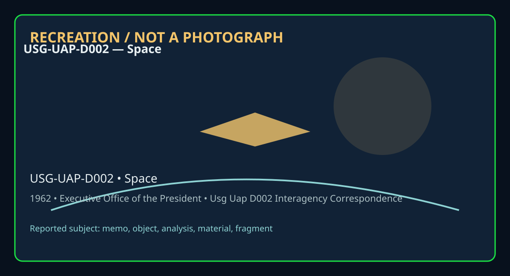

Release 07 / archival case file / USG-UAP-D002
Usg Uap D002 Interagency Correspondence Concerning Space Fragments 1962 1964
This usg uap d002 interagency correspondence places a memo, object, analysis, material, fragment thread in a 1962 Space record.
ID: USG-UAP-D002
Filename:
USG-UAP-D002-Interagency_Correspondence_Concerning_Space_Fragments-1962_1964.pdfDate marker: 1962
Location: Space
Agency or collection signal: Executive Office of the President
Pages read: 72

RECREATION / NOT A PHOTOGRAPH. The diagram is an interpretive editorial aid, not source imagery.
What this document says
The opening page's extracted text begins: “Page 1 LBJ LIBRARY DOCUMENT WITHDRAWAL SHEET Doc# DocType Doc Info Classification Pages Date Restriction 04 ffleffle 'o\1elsh to F1 itscl 1, et.al. e 1 11/15/63 A ~ ~1'~14 06 draft Near duplicate of #7 & 9 C 2 11/15/63 A 07 draft Near duplicate of #6 & 9 C 2 11/15/63 A OS s:Q8R10 NASC Meeti"g... POI 11/21/63 A open Ci/)~ 14 09 draft "Guidelines for lnteragency Handling ... " C 2 11/15/63 A [Near duplicate of #6 & 7] 10 draft "Guidelines for lnteragency Handling ... " C 3 [11/63] A ~ ffl8ffl0 ~M,SC MeeliA!;J ... POI 1 11{6{63 i¾ A open (;\ /15/ly Hi R18R19 WelsR le MeC011e -C 1 5/31/63 A open qi iLifJ l4 202!! ,pt "Guidcli"es fer li,te~ege11cy Ha, ,dlhig~ " e 2 [j9§J] A orrn 'l't I, e p.u ~( ' 2 I\t • A i1 memo c. Johnson to Pa,, ott C 12(10,<62 [Duplicate of #25] open qI 'C7tJl4 Collection Title National Security File, Files of Charles E. Johnson Folder Title "Space Vehicle Fragments - Responsibilities and Procedures" Box Number 018 Restriction Codes 1/13/2009 aJ (A) Closed by Executive Order 13292 governing acc... to national security Information. (B) Closed by statute or by the agency which originated the document ~ (C) Closed In accordance with restrictions contained In the donor's deed of gift.”
Across the 72 pages, the recurring terms are memo, object, analysis, material, fragment. Those details belong to this file, not to a generic case template. Page-level reading follows:
- Page 1: Page 1 LBJ LIBRARY DOCUMENT WITHDRAWAL SHEET Doc# DocType Doc Info Classification Pages Date Restriction 04 ffleffle 'o\1elsh to F1 itscl 1, et.al. e 1 11/15/63 A ~ ~1'~14 06 draft Near duplicate of #7 & 9 C 2 11/15/63 A 07 draft Near duplicate of #6 & 9 C 2 11/15/63 A OS s:Q8R10 NASC Meeti"g... POI 11/21/63 A open Ci/)~ 14 09 draft "Guidelines for lnteragen
- Page 2: .. Page2 LBJ LIBRARY DOCUMENT WITHDRAWAL SHEET Doc# DocType Doc Info Classification Pages Date Restriction :.23 ff18ff18 Te ~MS&s, MA SC C 1 12/7/62 A open C1JJL3//14 25 FROFR8 Dttplieete of #21 d; 12710!62 A OJ)ef) q/lc;JIY .36~ draft "Attacl:IFJient Ii!!... '-6 2 [10tS2) A 0~ q/J'7114 Collection Title National Security File, Files of Charles E. Johnson Fol
- Page 3: NASA HEADQUARTERS ROUTING SLIP CODE NAME (if necessary) ACTION APPROVAL 1. Charles Johnson CONCURRENCE FILE 2. National Security INFORMATION INVESTIGATE AND ADVISE 3. Council NOTE AND FORWARD NOTE AND RETURN 4. PER REQUEST RECOMMENDATION 5. SEE ME SIGNATURE 6. REPLY FOR SIGNATURE OF: 7. REMARKS: Underlined sections have been added since the last draf't. s CO
- Page 4: I J · CQNlU~IAI., AF :PAvt.. • MANNED SPACECRAFT CENTER -- ATTN: DR . GILRUTH AND ..J-lJANcty Bf\AT MARSHALL SPACE FLIGHT CENTER -- ATTN: DR . VON BRAUN l\l"D>\SL AnE~ NASA JOHN F • .KENNEDY SPACE CENTER -- ATTN: D . DEB ~s . . JOHN l: II: G UNTIL FURTHER NOTICE , THE FOLLO~aNG IS THE RESPONSE TO QUE. ,s ON POSSIBLE EARTH Ii•1PACTS OF FRAG..~ ~s F m. Of'::.
- Page 5: NASA I • AF X ·•s. ON LOCATIOM OF Ii ·1'£1'1 SINCE T!US VEHICLE •. A SI NGLE I MPACT POiclT. I VERY CAREFULLY STUDIED. T ~ l? SDIBI PROPER'n' zs QUIT , • , •OTE . Al.~ Discuss1m'.t oF suca 1J>1 IMPROBABLE INCIDENT WOULD BE HEAVILY COl"JECTURAL. ,a D. Af'TEli A R.El?ORTED IMP AC'l': UNDER ~0· CIRCUMSTANCES DO.ES THIS AGENcY (GOV~RND- NT) CONJECTURE ON 'Ii-IE
- Page 6: t r .. ' . " I • • ~ ... . ~ I 4 A ,. I NASA l AF X ., I I ' .STUDY AND PROMPT PUBLIC 1..N!: U&CEMEN ANALYSIS BAS BEEN COMPLET~D." JULIAN SCHEER ASSIST~~ AI:MINISTRATOR FOR PUBLlC AFFAIRS cc: AD/Dr. Dryden AI/Mr . Frutkin AA/Mi:. Williamson M/Dr. Muell.er MAO/Mr. Abernethy AFP/Mr. Lloyd M-N/Mr . Alibrando A/Mr . Webb • M/Dr. Seamans WILL BE MADE t'JHE.N 3 3
- Page 7:
- Page 8:
- Page 9: c.
- Page 10: U. S. GoYunment Prmting Otf c1;. 1963 o/9668 FROM illi F. He&./Code ll -------------------------1 TO Johnso 11 DATE OF DOCUMENT 1~ CHECK WHETHER □ ACTION □ INFO, COPY COPY INFORMATION COPY TO ~ DATE RECEIVED ACTION COPY TO DESTROYED ( DATE AND NO.) -----------------"""T""-------1 CLASSIFIED CLASSIFICATION SUSPENSE DATE POST OFFICE REGISTRY NO. MATERIAL~ NO:
- Page 11: ( PLACE NASA CONTROL FORMS HERE) This sheet and NASA Control Forms must be attached to Secret material while in the custody of NASA Headquarters. The attachment contains information affecting the National Defense of the United States within the meaning of the espionage laws,· Title 18, U.S.C., Secs. 793 and 794, the transmission or revelation of which in any
- Page 12: --- ~ ~1,1 /1,..f . i . GH.Vd':-' j t 1,::., ,roar .. ' ... . L,. -.J r n~cd n ~ • 11~ J DownQ .... t automatica .1., 1~ • no 3b 111t crva .., , RESPONSE 'ID QUERY declassif i d ...•April 8, 1964, RE: Queries on Fragment Return from NASA Spacecraft or Space Vehicles A much abbreviated guideline for RrQ, has been provided by Mr. Scheer to various NASA officia
- Page 13: ... 1.l;f • - • • I ' 2 5. If any fragments come down, where are they most likely to impactt The small number of' fragments surviving f'rom any satellite will be dispersed over an area of thousands of' square miles, most of' which are likely to be oceans, seas, or other water surface. 6. Can the fragment problem be further decreased by exploding the orbiting
- Page 14: . .... .... .... , _ .• . .. . . · ... t GD·~•i:~~.~-~-e-----d 12:--=-=-::nyear- • •• )\.,.' 4• ~ -- ... , ~... --.4~ , 0 ..,J ' i~ t erv: ls ; not automat i cally c ~ .... ·.. ,...,3 ~- ~.Gd ~ . 9. Will this sort of thing be a continuing hazard? In some degree, yes. In time, it should become possib1~ to develop some solutions such as ensured return over wa
- Page 15: EXECUTIVE OFFICE OF THE PRESIDENT NATIONAL AERONAUTICS and SPACE COUNCIL WASHINGTON EXECUTIVE SECRETARY November 15, 1963 MEMORANDUM TO: Dr. Arnold Fritsch (AEC) Mr. Albert D. Wheelan (CIA) Dr. Albert C. Hall (DOD) Mr. Arnold Frutkin (NASA) / Mr. Charles Johnson (NSC) v Dr. Nicholas Golovin (OST) Mr. Robert Packard (State) Subject: Fragments The meeting on N
- Page 16: ---- '5"
- Page 17: Mr. Huntington Sheldon Sheldon DECLASSJ..1-'Hi~-' 'uathom-,N).,:J . o~oft o1 g.oo\{3 ~l·~ NARA. Date ,;l\-1~
- Page 18: • C:ONFIL1ENTIA L Draft of Nov~ 6, ~96Z Revised l)y: i;,c)D 3/ 1/63 [ ] - material deleted U?derlining - m-.terial ~dded GUIDELINES FOR INTERACiENCY HANDLING OF SPACE VEHICLE Fa.AGM!.;NTS l. The National Aeronautics and Space Administration (NASA) J• designated as the agency responsible for receiving. : [ analyzing] ~4 identifying . [ any] fragments, or susp
- Page 19: .. ,l _!:ONFIDENTIP L , 6. The DOD will notify NASA when deorbits are expected and when collection teams have been alerted to obtain the deorbiting fragments. Also, DOD will inform NASA of the results of such collection efforts whether successful or not. 7. The Atomic Energy Commission (AEC) will participate in the analysis of fragments of space vehicles whi
- Page 20: / DECLASSLfflV--' 'unbontn n ;1,030p. o,i .. oo' /"5' ~l'-F- NARA. D,tt~f ,J.H\.(
- Page 21: 13 DRAFT November 6, 1962 PUBLIC STATEMENT ON HANDLING OF SPACE VEHICLE FRAG.r.lIENTS The National Aeronautics and Space Administration is designated as the Governm.ent agency responsible for receiving [ analyzing] , and identifying [ any] fragments or suspected fr2.gments of space vehicles of all types, including the contents thereof, which fall upon the te
- Page 22: 1)-:.L-, Us l 13 fv k ~f ~l -~ f-r-~~ ? 1~~~7·
- Page 23: EXECUTIVE OFFICE OF THE PRESIDENT NATIONAL AERONAUTICS and SPACE COUNCIL WASHINGTON EXECUTIVE SECRETARY October 24, 1963 MEMORANDUM TO: Honorable Dean Rusk Honorable John A. McCone Secretary of State Director, CIA Honorable Roswell L. Gilpatric Honorable Jerome B. Wiesner Deputy Secretary of Defense Director, OST Honorable James E. Webb / Honorable McGeorge
- Page 24: lo EXECUTIVE OFFICE OF THE PRESIDENT NATIONAL AERONAUTICS and SPACE COUNCIL WASHINGTON EXECUTIVE SECRETARY October 24, 196 3 MEMORANDUM TO: Honorabl Dean Rusk Honorabl John A, McCon Seer ta.ry of State Dir ctor, CIA Honorabl Ro well L . Gilpatric Honorabl J rome B. Wi sn r Deputy Secretary •Of D fens Dire c:tor, OST Honorabl James E. rfebb Honorable McGeor B
- Page 25: IN REPlY REFER TO: . .•. .:r . F,c,. m ·,;e.., Executive Secret Ne~1~na1 Aeronautics Spec~ Co~c1l . Ws.;·i:1og ,~n 25, D .. ·:.c. · /./' .· ·:.:1 I I 1 • .·:_• -;.-~: '.-/:::~. F:-1::-vtn~ ·a disc-.a~ict ~ laat. , . ,,,. evej -::-9..!': ~~ h.e.nd.ling ot !ragme!lta .aa4 g:rea.t'ly aimplitie1 Ot;..r ccz :!k-n•.:. s, 6.l :.~ t.igh 1t '1'8.S aot ;>oHible'' to
- Page 26: MEM011.AN.DUM n>& a..rule,....A.M.c.. ~ ., c •..a 1,s,nn1, • Chtf ............ Thu oface wu eeke1l ••~ ttm. ... le c••••• .._ _ of a pl&Wc l&nr r•e,.... aD1l aa .._al (eJaedtlecl) dove wt to 8s re•poa•iWlid•• Md• wtJAM po ■•••- ..__... .. ••Jed rnaner. T• Mau..._ my me,..,,, tan .. U. Ow ral Carlew, clallld Ne,..,,,._ JI. lf6J. ,...w.l... Ila• I 11 ... Ml,_.
- Page 27: -GGNFlDENTIAL GUIDELINES FOR INTE RAGENCY HANDLING OF SPACE VEHICLE FRAGMENTS lo The National Aeronautics and Space Administration (NASA) is designated as the agency responsible for receiving and identifying fragments, or suspected fragments of space vehicles of all types, including the contents thereof, '-irhich fall upon the terri tory of the United State
- Page 28: r CONFIDEN rlAL .. z 7. The Atomic Energy Commission (AEC) will participate in the analysis of fragments of space vehicles which have utilized or transported, or are suspected of having utilized or transported, radioactive materials or special nuclear materials, and will exer ... cise responsibility for special nuclear materials, in accordance with its sta
- Page 29: ---- NATIONAL AERONAUTICS and SPACE COUNCIL 2t) March 4 , 1963 To: Charles Johnson This is the paper to which I re £erred on the phoneo .......... E. C. Welsh
- Page 30: eeNFl&ENTJm. 2act GUIDELINES FOR INTERAGENCY HANDLING OF SPACE VElL.CLE FRAGMENTS 1. The National Aeronautics and Space Administration (~NASA) is design&ted aa the agency responaible for receiving and -i~entifying £raiment,, or 1uapected fragment• of space vehicles. ' 1 of all types, including the contents thereof. which fall upon the territory of the United
- Page 31: ., 6. The DoD will n•::,tify NASA when d6orbits are exp~cted and when collectior_ :cams have been alerted to obtain the deorbiting fragi:nents. Also, DoD will inform NASA of the results of such collection efiorta whether successful or not. 7. The Atomic Energy Commission (AEC) will participate in the analysis of fragments of space vehicles which have utilize
- Page 32: December 1 MEMORANDUM FOR: Mr. Thomas Parrott Tom- You should know about the attached documents and the small hassel between DOD and CIA concerning the procedural guidelines paper. As I under tand it, the departmental repre sentatives that worked with Ed Welsh had secured departmental clearances on the procedure but later on the Agency clearance somehow go
- Page 33: z_Z- ~ ~~~ ~. 1~ ~ ~~ c..etl ~I
- Page 34: CENTRAL INTELLIGENCE AGENCY WASHINGTON 25 , D. C . OFFICE OF DEPUTY DIRECTOR OF CENTRAL INTELLIGENCE 7 DEC1962 J {SigneO: r al .. l=I.T' ;/ DECL\SSIFIJp'f> ,uthotttf R" ,..., C""> ~ - ::0 zm • ('j <O . (/')(TJ .._,, n< "' . fT1 ::t::. .. 0-, "'
- Page 35: ,, EXECUTIVE OFFICE OF THE PRESIDENT NATIONAL AERONAUTICS and SPACE WASHINGTON EXECUTIVE SECRETARY November 6, 1962 Mr. Johnson: Herewith are the draft papers as revised and agreed to at today's meeting0 Copies have been sent to interested agency heads for formal concurrence• COUNCIL .... .... E. C. Welsh 2 Enclosures • Fragments L, (Unclassified) 2o (Confid
- Page 36: - DRAFT il /6/62 P UBLIC STATEiviENT ON HANDLING OF SPACE VEHICLE F .:~AGuiENTS The National Aeronautics and Space Administration is designated as the Government agency responsible for receiving, analyzing, and identifying any fragments or suspected fragments of space vehicles of all types, including the contents thereof, which fall upon the terri tory of t
- Page 37: I GOP.lFID E HTI.AL DRAFT 11/6/62 GUIDELINES FOR INTERAGENCY HANDLING OF SPACE VEHICLE FRAGMENTS I. The National Aeronautics and Space Administration (NASA) is designated as the agency responsible for receiving, analyzing, and identify ing any fragments, or suspected fragments of space vehicles of all types, including the contents thereof, which fall upon t
- Page 38: ------------ CONFIDENTIAL - 2 8. The State Department will provide policy guidance with respect to the disposition of fragments from vehicles launched by foreign countries, or made available to the United States by foreign countries. 9. NASA will serve as the focal point for the coordination and release of public information on fragments. r.o~IFIDEN'PIAL ~
- Page 39: CLASSIFIED DOCUMENT RECEIPT TO (Name an a re.rs> Mr. Charle E. John• National Security Council R.oom #368 EOB Wubtn FROM <Name aftd address> E. C. Welah National Aeronautics and Spac Council W abi'l'Udon D General Services Administration TITLPOR 1oe:ift1F~AMN NCLASS[PJED Dercriptio,z s11ch (IJ File No., Sr1bject, etc.) Fr gment DATE OF TRANSFER GSA REGISTER
- Page 40: r. To l ·o th 1 l.0 r u r en y u v n C . Jo n on TI DE.CL\SSI.FIS~> ~amoatf NlcJ· o'3£)R,.o\ j .. oo\ /$. ftl·-K--- NAIA. Date 1~e1 \-J"
- Page 41: Z6 DRAFT il/ 6/62 PUBLIC STATEiviENT ON HANDLING OF SPACE VEHICLE F h.AGMENTS The National Aeronautics and Space Administration is designated as the Government agency responsible for receiving, analyzing, and identifying any fragments or suspected fragments of space vehicles of all types, including the contents thereof, which fall upon the terri tory of the
- Page 42: f Z7 I -CON FIDi: N TI ..A... .I:., DRAFT 11/6/62 GUIDELINES FOR INTERAGENCY HANDLING OF SPACE VEHICLE FRAGMENTS 1. The National Aeronautics and Space Administration (NASA) is designated as the agency responsible for receiving, analyzing, and identify ing any fragments, or suspected fragments of space vehicles of all type s 1 including the contents thereof,
- Page 43: £0-:NFIDEM'i'IAL - 2 8. The State Department will provide policy guidance with respect to the disposition of fragments from vehicles launched by foreign countries, or made available to the United States by foreign countries. 9. NASA will serve as the focal point for the coordination and release of public information on fragments. •0 6 N F I D S P¢ ':F I A
- Page 44: ,--~, ~~,:;.-.,._..__, .7: wo~ jf • ? /~~ --/ -r l t~Jt~ 1 N-~t- 7 'ft~S,4-, I};IT -/4 "I t. i I.., -r,.c.__ I
- Page 45: NATIONAL AEB.ONAUTICS AND SPACE COUNCU.. Iateraaeac, M••tbla oa Space Velllct. Fraan1ente Tuad&y. November 6, 1962 • 10:30 a. m. :Reem213E.0.8 CHAIR.MAN: A.EC: Dr. Anael4 Frltaclt. .JUSTICE: Mr. It.Nert S&loedaia NASA: NSC: OST: Mr. ~•ae Sltohlikoff MASC: D.r. Curlee S. Saelcloa ll r. claard Hlracb Mr. R.. • Hal• STATE: M•. Robert Packard Mr. IAenard. M.eeke
- Page 46: - DRAFT '""CONPID:SHTIAL November 1, 1962 GUIDELINES FOR IN'TERAGENCY HANDLING OF SPACE VEHICLE FRAGMENTS 1. The National Aeronautics and Space Administration (NASA) is designated as the agency responsible for receiving, analyzing, and identifying any fragments, or suspected fragments of space vehicles of all types, including the contents thereof, which fall
- Page 47: ' . -2 CO~lFmEN 1'LAD --=------- s. NASA may continue to use the Smithsonian Institution for collection and analysis of fragments by contractual arrangements, and may also make appropriate arrange~ents for assistance with private agencies. 6. The DOD will notify NASA when deorbits are expected and when collection teams have been alerted to obtain the deor
- Page 48: - CONFIDENTJA t ~ I • NATIONAL AERONAUTICS AND SPACE COUNCIL ov mber , 9 2 TO: • • ( ( >/ ( ( ) ( ( T) J tic ) ubject: i: ent . • • Executive Secretary ov b r 6, ·n
- Page 49: DRAFT November 1, l 96Z PUBLIC STATEMENT ON HANDLING OF SPACE VEHICLE FRAGMENTS The National Aeronautics and Space Administration is designated as the Government agency responsible for receiving, analyzing, and identifying any fragments or suspected fragments of space vehicles of all types, including the contents thereof, which fall upon the territory of the
- Page 50: 33 - DRAFT COMEl.Di:NTIAL November 1, 1962 GUIDELINES FOR INTERAGENCY HANDLING OF SP ACE VEHICLE FRAGMENTS 1. The National Aeronautics and Space Administration (NASA) is designated as the agency responsible for receiving, analyzing, and identifying any fragments, or suspected fragments of space vehicles of all types, including the contents thereof, which fal
- Page 51: - ·2 c:-e0NFIDEN il1ili s. NASA may continue to use the Smithsonian Institution for collection and analysis of fragments by contractual arrangements, and may also make appropriate arrangements for assistance with private agencies. 6. The DOD will notify NASA when deorbits are expected and when collection teams have been alerted to obtain the deorbiting fra
- Page 52: 3'1 EXECUTIVE OFFICE OF THE PRESIDENT NATIONAL AERONAUTICS and SPACE COUNCIL WASHINGTON EXECUTIVE SECRETARY October 24, 1962 MEMORANDUM TO Mr. Charles E. Johnson National Security Council Washington, D. C. Thank you.for your memorandum of October 23, as well as for the re - structuring of the guidelines paper - both on the subject of handling of space vehicl
- Page 53: Cc - r. Carl NS C F iles
- Page 54: 10 L CU TY A Tl N 0 NDU NO. T A o ut c UB CT: ce V ·c T ur I. tr i d t r , I' t r i r t th 2. y p 3. C 4. A met
- Page 55: L -Z 5. T e Department f ef nae wil not y , A.$ rbit r wh n c 1 ction te h v be rte to t in th orbiti fr ment . DOD w 1 l o .inform N A of th re ulta of ch c ectio eff rts hethe ucc:es u1 or not. y ucb bject obt n r turn d initi to NA ub e nt Un nee it xi tin telli ence co lectio rocedure . 6. In ccord ce with ·t at tutory r 1 the tornic nergy Corn r cip te
- Page 56: 36 NATIONAL AERONAUTICS and SPACE COUNCIL October 22, 1962 To: Mr. Charles Johnson National Security Council Attached is a set of papers which have been distributed to the individuals indicated. I thought it might be helpful for you to have an advance look at this language while it is being re-examined by the respective interested agencies. Let me know if yo
- Page 57: (AE C) -OONFIDENTf ~ I
- Page 58: '36b- OFFICfAt USF. ONly OFF IA U ONL
- Page 59: DEC~.. ~uthontY M~ -o"\DR.. o ,g.o()../ to th,...._._._ NARA. Datt ' \.... 1l.(
- Page 60: N\Mnraamtt ~ ;,j~t 11~ _ • ~
- Page 61: CLASSIFIED DOCUMENT RECEIPT GSA FORM 1237 MARCH 1960 THIS COPY TO BE RETAINED BY ADDRESSEE TO <Name an a re.rs) ~r. Charle• Johnaon National Security Council Room #368, E. O. B. • Waehington ZS, D. C. FROM <Name ""d address> E. C. Welah National Aeronautic• and Space Council General Services Administration TITLE Drscri/ltion s11ch as File No., S11hjert, etc.
- Page 62: October 17, 1962 TELECON SUBJECT: Recovery of satellite fragments Called R. W. Hale, Space Council, and informed him that I would be unable to attend the meeting this afternoon in yiew of a conflict in commitments. Suggested that my presence. was not needed in view of my concurrence and support of the designation of NASA to have responsibility for the progra
- Page 63: NA TI O NA L A E R O NA U TI C S and S PA C E C O UN CI L 0~ .,.,--, 10/12/62 Mr. Johnson: In accordance with telephone conversation with your secre tary this morning. R. W. Hale
- Page 64: • , , Draft Statement for Consideration at Meeting on October 17, 1962 2:30 p. m. -- Room 218 E. 0. B. The National Aeronautics and Space Administration has been designated as the Government agency responsible for obtaining, analyzing, and identifying any fragments or suspected fragments from space vehicles of all types which fall upon the territory of the U
- Page 65: 3 10/12/62 3:45 p.m. Mr. Johnson: (1) This is part of the correspondence which will form the background for next Wed nesday's 2:30 meeting. (2) Another draft paper, I was told, is being sent to you for consideration at the meeting. Mabel
- Page 66: 1 NA T I O N A.L A E R O NA U T I C S and S PA C E C O UN C I L Mabel: 3-- A memo. similar to the attached was sent to Mr. Bundy. M. uill
- Page 67: .,....... ,_. ,. w ...... . llr:lmal MMINIIIIIIIIIMI~ .......................................... ....w• •• cs Ml•• .., dA _,,. ...-a ...,._..llillltlea la n .... .. ········· -,,.......~ -,...., ...-........ ,........_.,_.,•• ...,cl•• -10 fall• 1f.L •nllwr w .. ,....................... ~•···~ II 11M UJllwlM .._ ........ ...11ia_ dca _. •••• C.:Mll le .. 111•
- Page 68: L.(O EXECUTIVE OFFICE OF THE PRESIDENT NATIONAL AERONAUTICS and SPACE COUNCIL WASHINGTON EXECUTIVE SECRETARY October 2, 1962 MEMORANDUM FOR . Honorable McGeorge Bundy Special Assistant to the President for National Security Affairs Subject: Responsibility and Procedure Re Space Vehicle Fragments. It has been suggested that there is need for a decision as to
- Page 69: '-II DRAFT November 1, 196Z PUBLIC STATEMENT ON HANDLING OF SPACE VEHICLE FRAGMENTS The National Aeronautics and Space Administration is designated as the Government agency responsible for receiving, analyzing, and identifying any fragments or suspected fragments of space vehicles of all types, including the contents thereof, which fall upon the territory of
- Page 70: L( a. .. . ... DRAFT November 1, l 96Z PUBLIC STATEMENT ON HANDLING OF SPACE VEHICLE FRAGMENTS The National Aeronautics and Space Administration is designated as the Government agency responsible for receiving, analyzing, and identifying any fragments or suspected fragments of space vehicles of all types, including the contents thereof, which fall upon the t
- Page 71: q~ / Draft Statement for Consideration at Meeting on October 17, 1962 2:30 p. m. -- Room 218 E. O. B. The National Aeronautics and Space Administration has been designated as the Government agency responsible for obtaining, analyzing, and identifying any fragments or suspected fragments from space vehicles of all types which fall upon the territory of the Un
- Page 72: ---- L(3 Draft Statement for Consideration at ?vleeting on October 17, 1962 2:30 p. m. -- Room 218 E. O. B. The National Aeronautics and Space Administration has been designated as the Government agency responsible for obtaining, analyzing, and identifying any fragments or suspected fragments from space vehicles of all types which fall upon the territory of
Historical context and disclosure schema
Read in context, this record belongs to the 1962 information environment: Executive Office of the President paperwork, a Space setting, and the reporting conventions visible in the source. Its broader disclosure value is procedural as well as anecdotal: it shows how an observation, material question, investigation, or analytical program was routed, described, and preserved. That makes it comparable to other Release 07 records without collapsing unlike evidence into one event.
Evidence limits
The source establishes that this document exists and records what its authors or quoted witnesses wrote. It does not, by itself, prove the identity, performance, origin, or physical reality of the reported subject. Extraction preserves wording but cannot restore missing attachments, authenticate provenance, or independently validate testimony. Interpretations beyond the page-specific record remain hypotheses.
Source: supplied PDF in research/tranche-07. This article is a research aid, not a claim that the reported object was non-human.